Микроскоп на OpenFlexure v3: от заказа до первого снимка
Девять этапов по порядку, внутри каждого — шаги с галочками. Отметки сохраняются в этом браузере. Ничего не режется и не паяется: всё соединяется разъёмами, винтами и готовыми проводами.
Порядок по времени. В первый день запускаются три заказа сразу: покупки (этап 1), печать корпуса (этап 2) и плата на заводе (этап 3) — они едут параллельно. Пока ждёте, запишите карту памяти (этап 5). Пришла плата — прошейте её (этап 4). Когда на руках всё, соберите механику (этап 6), электронику (этап 7) и запустите микроскоп на столе (этап 8). Бокс с климатом — после этого (этап 9).
1Купить комплектующие
- ШАГ 1.1Сначала заказать то, что едет из-за рубежа — это самое долгое: камера, объектив, ахромат, линза конденсора, карта памяти (в таблице помечены «из Китая»).
- ШАГ 1.2Затем всё остальное со складов в России: Raspberry Pi, блок питания, моторы, кольца, крепёж, масло, ключ, провода, полипропилен.
- ШАГ 1.3Проверить инструменты: крестовая отвёртка PZ1, бокорезы, канцелярский нож. Их в таблице нет — обычно они есть дома.
| Фото | Что | Кол-во | Сумма | Где |
|---|---|---|---|---|
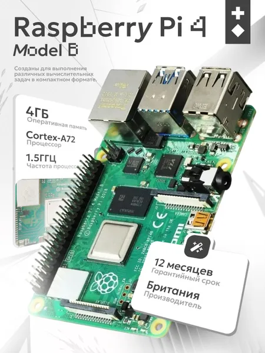 | Raspberry Pi 4 Model B, 4 ГБна WB у продавца из Китая дешевле — 11 765 ₽ | 1 | 19 562 ₽ | Ozon |
 | Блок питания Gembird 5,1 В 3 А, USB-Cодин на весь микроскоп, включается в Sangaboard | 1 | 795 ₽ | Ozon |
 | microSD SanDisk Extreme 32 ГБ, A1, V30 из Китаякласс A1/A2 и U3 обязательны | 1 | 1 928 ₽ | Wildberries |
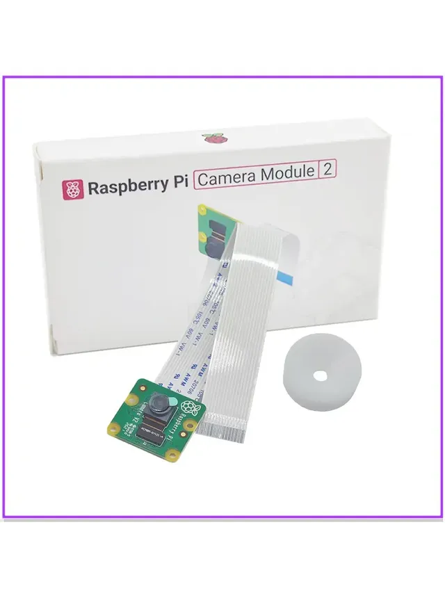 | Камера Raspberry Pi Camera Module 2 из Китаяобычная, не NoIR | 1 | 2 362 ₽ | Wildberries |
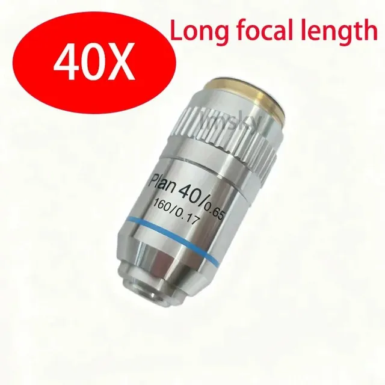 | Объектив Imsky Plan 40/0.65, 160/0.17 из Китаясерия 195, как у IO Rodeo | 1 | 3 551 ₽ | Яндекс Маркет |
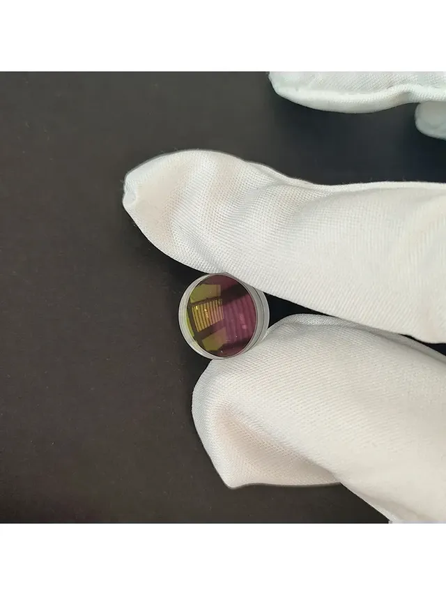 | Ахромат Ø12,7 мм, f = 50 мм из Китаятубусная линза | 1 | 951 ₽ | Wildberries |
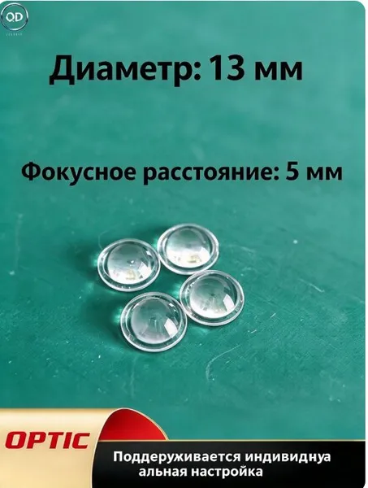 | Линза конденсора PMMA Ø13 мм, f = 5 мм, 10 шт из Китаянужна 1 | 1 | 561 ₽ | Ozon |
 | Мотор 28BYJ-48 на 5 Вплаты ULN2003 из комплекта не понадобятся | 3 | 738 ₽ | Wildberries |
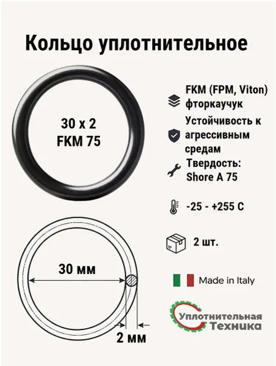 | Кольцо 30×2, FKM, 2 штнужно 3, с запасом | 2 | 748 ₽ | Ozon |
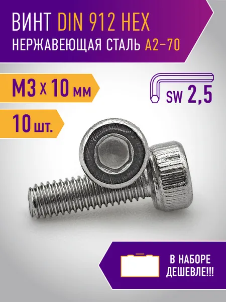 | Винт M3×10, DIN 912, 10 штнужно 17 | 2 | 316 ₽ | Ozon |
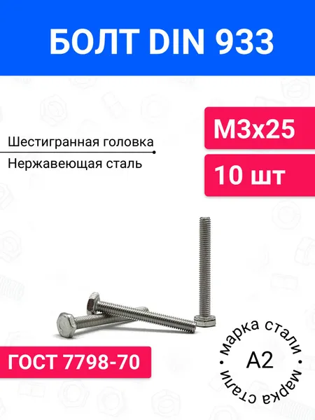 | Болт M3×25, DIN 933, 10 штнужно 4 | 1 | 161 ₽ | Ozon |
 | Гайка M3, 10 штнужна 21 | 3 | 390 ₽ | Ozon |
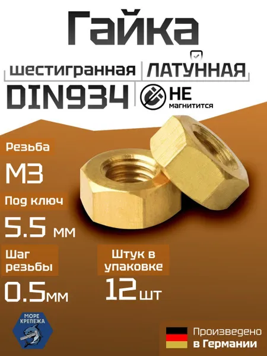 | Гайка M3 латунная, 12 штнужно 3 | 1 | 168 ₽ | Ozon |
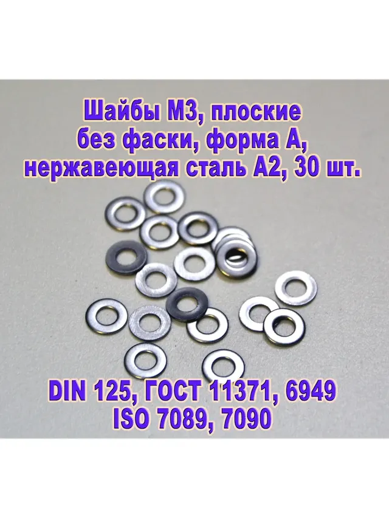 | Шайба M3, DIN 125нужно 8 | 1 | 142 ₽ | Wildberries |
 | Саморез 2,2×6,5, DIN 7981, 50 штнужно около 20 | 1 | 157 ₽ | Ozon |
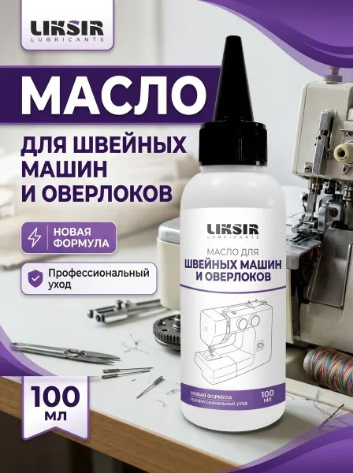 | Масло для швейных машиннесколько капель на резьбу | 1 | 175 ₽ | Ozon |
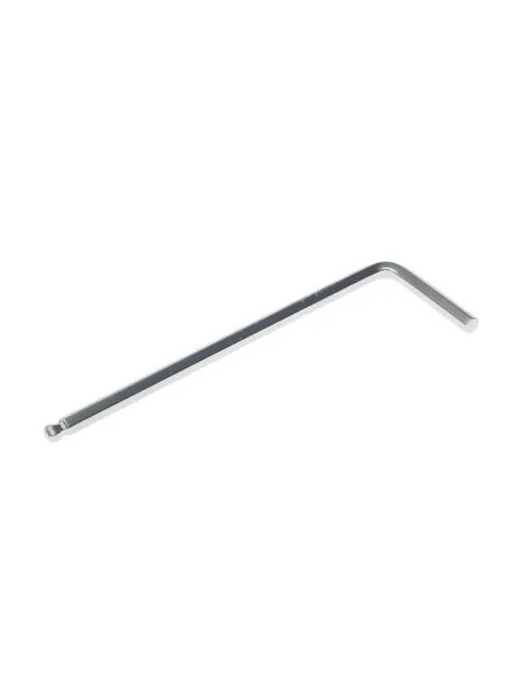 | Ключ шестигранный 2,5 мм с шаром | 1 | 85 ₽ | Wildberries |
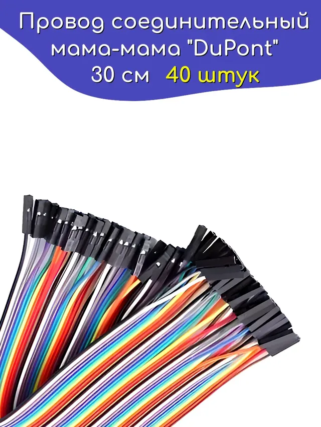 | Провода DuPont мама-мама 30 см, 40 шткрасный и чёрный — кабель подсветки | 1 | 261 ₽ | Wildberries |
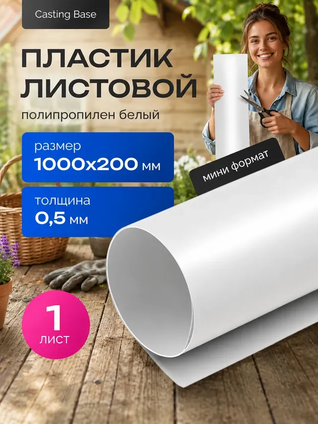 | Полипропилен белый 0,5 мм, 1000×200кружок-рассеиватель для подсветки | 1 | 198 ₽ | Wildberries |
| Итого с Raspberry Pi с Ozon | 33 249 ₽ | |||
| Итого, если Pi взять на WB у продавца из Китая | 25 452 ₽ | |||
Arduino Nano, светодиод 5 мм, отдельная USB-зарядка и платы ULN2003 для v3 не нужны. Подробнее о каждой позиции — на странице закупки.
2Заказать печать корпуса
- ШАГ 2.1Скачать архив STL. openflexure-argus-stl.zip (1,7 МБ, 28 файлов по папкам, внутри README для мастера).
- ШАГ 2.2Выбрать, кто напечатает. Вариант на Ozon: услуга «3D печать на заказ по STL файлам» (магазин 3d_magic_alice, 4,9 ★, PETG есть в списке материалов). Продавец просит не оформлять покупку до согласования в чате. Вариант в Тольятти — мастера на Яндекс Картах или Авито.
- ШАГ 2.3Написать мастеру текстом ниже (кнопка копирует его) и приложить архив или ссылку на него.
- ШАГ 2.4Согласовать цену, срок и цвета. Попросить сначала напечатать тесты из папки 4 и прислать фото: мосты на тестовой ножке должны пропечататься, а кайма — легко сниматься.
- ШАГ 2.5Только после согласования оплатить (на Ozon — оформить покупку услуги).
- ШАГ 2.6Принять детали: материал PETG, поддержек внутри нет, модуль оптики и рука конденсора чёрные, шестерни и ножки — по 3 штуки, прижимы — 2.
Здравствуйте! Нужно напечатать детали микроскопа OpenFlexure по STL-файлам. Архив: https://taksa1973.github.io/results/openflexure-argus-stl.zip Материал PETG, сплошные цвета (не прозрачный, не «шёлк»). Сопло 0,4 мм, слой 0,2 мм, заполнение по умолчанию. Поддержки НЕ ставить — они ломают механизм. Кайма на все детали, кроме main_body.stl: у неё кайма уже в модели. Slice gap closing radius 0,001 мм, чтобы не залить тонкие зазоры. Сначала тесты из папки 4-test-pechati (около 5 г, без каймы) — пришлите, пожалуйста, фото. Папка 1 — любой цвет, папка 2 — чёрным, папка 3 — можно PLA. Папки 5 и 6 не печатать. Самая крупная деталь 171 × 134 × 78 мм. Сколько будет стоить и сколько займёт?
3Заказать плату Sangaboard на заводе
Готовую плату в Россию не продают (подробно — на странице v3). Её делают на заводе по официальным открытым файлам OpenFlexure; пакет ниже уже собран.
- ШАГ 3.1Скачать пакет для завода: openflexure-argus-zavod.zip. Внутри — файлы Sangaboard v0.5 (Gerber, список компонентов, координаты монтажа, схема), файлы платы светодиода и текст заявки.
- ШАГ 3.2Открыть Резонит — российский завод, делает и платы, и монтаж: rezonit.ru. Заказать можно через личный кабинет или письмом на pcb@rezonit.ru с бланком заказа с их страницы оформления.
- ШАГ 3.3Отправить заявку: текст ниже и пакет файлов в ZIP (так просит завод). Для физического лица они запрашивают паспортные данные для документов.
- ШАГ 3.4Согласовать замены компонентов. В списке компонентов стоят коды магазина LCSC; завод подберёт аналоги — попросите прислать список замен до запуска.
- ШАГ 3.5Оплатить и ждать. По сайту Резонита срочный монтаж мелких серий — от 7 рабочих дней, от 1 штуки.
- ШАГ 3.6Если Резонит не возьмётся — файлы изначально сделаны под JLCPCB (Китай); доставку в Россию у них видно только при оформлении заказа.
Здравствуйте! Прошу рассчитать изготовление и монтаж двух плат по открытому проекту OpenFlexure. Файлы — в приложенном архиве. 1) Sangaboard v0.5 (папка 1-sangaboard-v0.5) Панель из 6 плат, 148,1 × 180,75 мм, 4 слоя, толщина 1,6 мм. Файлы: gerbers.zip — Gerber, bom.csv — компоненты (с кодами LCSC), pos.csv — координаты монтажа, schematic.pdf — схема. Монтаж поверхностный и выводной (разъёмы JST XH, гнёзда 2×20 и 2×13, штыревые разъёмы). Комплектация вашей закупкой; замены компонентов прошу согласовать. Нужна 1 панель. 2) Плата светодиода (папка 2-plata-svetodioda) Панель из 6 плат, 78 × 83 мм, 2 слоя, толщина 1,6 мм. Файлы: папка gerber, bom.csv, pos.csv. В списке компонентов нет светодиода Bridgelux BXEN-50S-11M-3C (корпус 2835) и углового штыревого разъёма 1×2 с шагом 2,54 мм — прошу установить и их. Нужна 1 панель. Программировать микроконтроллер не нужно, прошивку зальём сами. Платы прошу отделить от панелей. Подскажите, пожалуйста, стоимость и срок.
4Прошить Sangaboard
- ШАГ 4.1Скачать файл прошивки: openflexure-sangaboard-v1.0.4.uf2. Его собрал я из официального исходного кода (ветка release, версия 1.0.4, сборка «pico» = Sangaboard v0.5.x); тот же файл лежит в пакете для завода.
- ШАГ 4.2Зажать кнопку USB_BOOT на Sangaboard и, не отпуская, подключить плату к компьютеру кабелем USB-C. Raspberry Pi к плате пока не надевать.
- ШАГ 4.3Отпустить кнопку. На компьютере появится диск RPI-RP2, как флешка.
- ШАГ 4.4Скопировать файл прошивки на этот диск. Плата сама перезагрузится, диск исчезнет — прошивка установлена.
- ШАГ 4.5Сделать так с каждой платой, которую будете ставить. Сервер v3 проверяет, что прошивка не ниже 1.0.4.
5Записать карту памяти с OpenFlexure v3
- ШАГ 5.1Установить Raspberry Pi Imager версии 2. OpenFlexure предупреждает: версия 1.9 не всегда правильно настраивает систему.
- ШАГ 5.2Подключить репозиторий OpenFlexure: App options → рядом с «Content Repository» нажать Edit → «Use custom URL» → вставить
https://build.openflexure.org/raspbian-openflexure/manifest.json→ Apply & Restart. - ШАГ 5.3Выбрать модель Raspberry Pi 4.
- ШАГ 5.4Выбрать систему OpenFlexure Raspbian v3.0.0 beta, вариант Full — с рабочим столом, его OpenFlexure советует новичкам. Lite — только управление по сети.
- ШАГ 5.5Выбрать карту microSD и дать микроскопу имя. Региональные настройки оставить как есть.
- ШАГ 5.6Задать пользователя и пароль, при желании Wi-Fi. Включить SSH с входом по паролю.
- ШАГ 5.7Нажать Write и дождаться конца записи. Карту — в слот на нижней стороне Pi.
6Собрать механику
Инструменты на всём этапе: шаровой шестигранник 2,5 мм, отвёртка PZ1, бокорезы, нож. Рисунок «что где стоит» — схема 1.
- ШАГ 6.1Зачистить печать. Снять кайму со всех деталей. В корпусе срезать 6 перемычек внутри колонн приводов и 4 у задних ножек, подрезать заподлицо.
- ШАГ 6.2Гайки в корпус — 12 штук. Гайку в паз, сверху вкрутить винт M3×10 до сопротивления, винт вывернуть — гайка остаётся. Столик — 4, площадка над Z — 2, крепления моторов X и Y — по 2, мотора Z — 2.
- ШАГ 6.3Подставка. Отломать поддержки, тем же способом втянуть 4 гайки под проушины.
- ШАГ 6.4Болты в шестерни. Болт M3×25 через большую шестерню и nut spinner, наживить стальную гайку, сверху gear holder; повернуть инструменты в разные стороны, чтобы болт сел в шестерню; гайку снять. Так все 3.
- ШАГ 6.5Латунные гайки. Через отверстие спереди вставить латунную гайку в колонну привода; она должна лечь ровно.
- ШАГ 6.6Шайбы и масло. На болт 2 шайбы выпуклостями друг к другу. Капля масла на резьбу, размазать носиком флакона — масло едва заметно.
- ШАГ 6.7Болт в привод. Вкрутить сверху в латунную гайку, пока гайка не поднимется до упора; если гайка крутится — придержать инструментом nut tool.
- ШАГ 6.8Резинка и ножка — самый трудный шаг. Собрать band tool (две ветки в крышку). Повернуть шестерню, чтобы в отверстии была видна резьба, вставить nut tool. Продеть кольцо 30×2 через ножку своей буквы, надеть на band tool, приложить ножку буквой наружу и с усилием протолкнуть инструмент до щелчка. Ножка должна встать заподлицо. Повторить для Y и Z.
- ШАГ 6.9Модуль оптики. Ахромат на lens tool более выпуклой стороной вниз, сверху вдавить чёрный модуль. Коснуться заземлённого металла, выкрутить объектив камеры ключом (около 4 оборотов). Камеру на модуль, сверху крышка, 2 самореза без перетяжки. Объектив вкрутить сверху ровно, без перекоса. Гайку M3 в паз сверху, винт M3×10 на пару оборотов — должно остаться около 5 мм резьбы.
- ШАГ 6.10Шлейф камеры. Положить шлейф 200 мм на стол: контакты на концах должны быть на разных сторонах (тип B), иначе камера сгорит. Вставить в камеру контактами к плате, закрыть защёлку.
- ШАГ 6.11Оптику в корпус, корпус на подставку. Модуль снизу в корпус, винт — в «замочную скважину» Z-привода, поднять до упора, затянуть ключом через каплевидное отверстие. Корпус на подставку, 4 винта M3×10.
- ШАГ 6.12Подсветка. Линзу на lens tool плоской стороной вниз, вдавить руку конденсора до щелчка. Болт M3×25 через барашек, гайку в паз ласточкина хвоста, наживить. Вырезать из полипропилена кружок около 14 мм, по проставке проколоть 2 отверстия. Перевернуть конденсор: рассеиватель → проставка → плата светодиода, 2 самореза. Красный провод — на «+» платы, чёрный — на второй контакт. Крышка, 2 самореза.
- ШАГ 6.13Подсветку на микроскоп. Ласточкин хвост на площадку над Z: 2 винта M3×10 с шайбами. Провод — сверху вниз через канал хвоста, затем через канал корпуса между шестернями Z и Y. Руку вдвинуть так, чтобы низ был примерно в 5 мм над столиком, зажать барашек.
- ШАГ 6.14Моторы. Малую шестерню на вал по лыскам, фланцем к мотору, 2 самореза. Подписать кабели X, Y, Z. Отцентровать приводы: в отверстии видна резьба и часть гайки, пластика колонны не видно. X и Y: кабель через канал в стенке, мотор на проушины шестернёй наружу, крышка кабеля, 2 винта M3×10. Z: кабель в паз слева от Z-привода, так же. Крышки кабелей X и Y дополнительно закрепить саморезом.
- ШАГ 6.15Прижимы. Винт M3×10 в прижим, ключом через отверстие в изгибе вкрутить в гайку столика. Так оба.
7Подключить электронику
Схема подключения — на странице v3.
- ШАГ 7.1Две гайки M3: одну — в паз за отверстием спереди подставки, другую — в паз ящика электроники возле разъёма питания Sangaboard.
- ШАГ 7.2Raspberry Pi в ящик (карта уже вставлена): с небольшим поворотом вдавить, чтобы разъёмы вышли в окна; 2 самореза.
- ШАГ 7.3Шлейф камеры в Pi: разъём CAMERA между micro-HDMI и аудиогнездом; поднять защёлку, вставить шлейф контактами от защёлки, закрыть.
- ШАГ 7.4Sangaboard на Pi: надеть на все 40 контактов, шлейф пропустить в прорезь платы, отверстия совместить; 2 самореза.
- ШАГ 7.5Моторы: кабель X — в разъём с меткой X, затем Y и Z. Мотор каждой оси — в свой разъём.
- ШАГ 7.6Подсветка: провод светодиода — на штыревой разъём с меткой «CC» на Sangaboard, красный — к «+» по маркировке платы.
- ШАГ 7.7Ящик в подставку, не пережав провода; 2 винта M3×10 в гайки из шага 7.1.
- ШАГ 7.8Питание: блок 5,1 В 3 А в разъём USB-C на Sangaboard. Плата питает и Pi.
8Первый запуск
- ШАГ 8.1Установить OpenFlexure Connect на компьютер (установщик для Windows; другие системы — на странице установки).
- ШАГ 8.2Включить микроскоп и подключить его к той же сети, что компьютер: кабелем Ethernet или по Wi-Fi, если он задан в Imager.
- ШАГ 8.3Открыть OpenFlexure Connect — он покажет микроскопы в сети. Подключиться к своему.
- ШАГ 8.4Проверить моторы: сдвинуть столик по X и Y, фокус по Z. Если какая-то ось едет не туда — проверить, в тот ли разъём вставлен её мотор.
- ШАГ 8.5Навести на образец: положить предметное стекло, сфокусироваться по Z. Подсветку сфокусировать, двигая руку конденсора вверх-вниз, и зажать барашек.
- ШАГ 8.6Этап 1 готов, когда микроскоп снимает, двигает столик и держит фокус. Работа с программой — в руководстве OpenFlexure.
9Потом: перенос в бокс 37 °C и 5 % CO₂
- ШАГ 9.1Докупить для бокса — список и вариант «электроника внутри» на странице v3: проходной USB-C, датчики SHT31 в корпусе, рычажные клеммы, гнёзда DC, шнур с вилкой, радиаторы; климат — на странице закупки.
- ШАГ 9.2Заказать резку бокса 350 × 350 × 400 мм внутри из чёрного акрила 5–6 мм: 3 отверстия M16, 2 под штуцеры, отверстие под проходной USB-C.
- ШАГ 9.3Поставить микроскоп целиком — с подставкой, Pi и Sangaboard — внутрь; питание через проходной USB-C.
- ШАГ 9.4Подключить климат по схеме бокса; сетевую часть — электрику, если нет опыта.
- ШАГ 9.5Проверить без клеток: сутки держит 37 °C, потом 5 % CO₂ и влажность; только после этого — клетки.
10Источники
- OpenFlexure, сборка high-res версии v7.0.0-beta6: порядок, приводы, модуль оптики, подсветка, моторы, Pi и Sangaboard, проводка.
- OpenFlexure, установка ПО: Raspberry Pi Imager 2, адрес репозитория, v3.0.0 beta, OpenFlexure Connect.
- GitLab: sangaboard-rp2040, ofm-led, sangaboard-firmware (release, v1.0.4).
- Резонит: оформление заказа (Gerber, бланк, паспортные данные для физлиц, pcb@rezonit.ru), монтаж (срочный мелкосерийный — от 7 рабочих дней, от 1 шт.).
- Ozon, 3D-печать по STL: порядок заказа из описания продавца.
- Модели и платы OpenFlexure — открытые лицензии CERN-OHL. Прошивка Sangaboard — GPLv3; файл UF2 собран из исходного кода ветки release, коммит b729ab5 (SHA-256 файла 51d5c261…bc65).